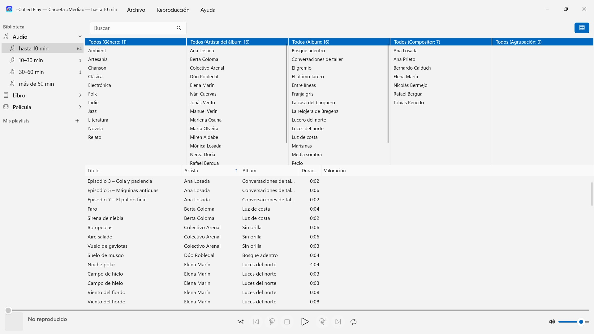
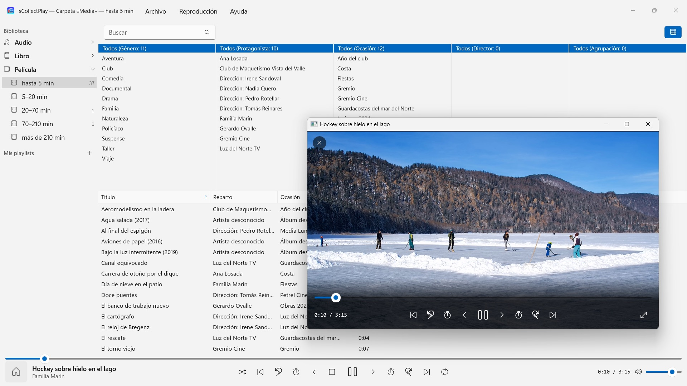

sCollectPlay
Elige una carpeta y reproduce – sin importar, sin copiar
En Microsoft Store a partir de noviembre de 2026Elige una carpeta y reproduce: música, audiolibros, podcasts, películas y e-books se ordenan solos – sin importar, sin cuenta, sin nube. También bibliotecas de iTunes (XML) con sus listas de reproducción.


sCollectPlay reproduce tu colección allí donde está: en cualquier carpeta, en discos externos o en una unidad de red. Elige una carpeta, y la música, los audiolibros, los podcasts, las películas y los e-books aparecen ordenados en una lista – sin importar, sin copiar y sin que nada cambie en tus archivos.
24 idiomas: inglés, alemán, checo, croata, neerlandés, finés, francés, húngaro, italiano, japonés, coreano, noruego bokmål, persa, polaco, portugués, rumano, ruso, español, sueco, tailandés, turco, ucraniano y chino (simplificado y tradicional). La app usa el idioma para mostrar de Windows.
DOS FUENTES
- Carpetas: sCollectPlay recorre una carpeta con sus subcarpetas y lee título, artista, álbum, género y duración de los propios archivos. Varias carpetas se pueden reunir en una sola lista. En el siguiente inicio, el último estado leído aparece al instante, y «Actualizar carpetas escaneadas» (Ctrl+R) solo lee lo que es nuevo, ha cambiado o se ha eliminado.
- XML de iTunes: la biblioteca de iTunes para Windows con listas de reproducción, valoraciones y número de reproducciones. Si una pista es música, audiolibro, podcast, largometraje, serie o videoclip, la app lo toma del XML.
ORDEN SIN ESFUERZO
Una carpeta no dice si un archivo es una canción o un audiolibro. Por eso sCollectPlay clasifica por duración al escanear: audio hasta 10, 10–30, 30–60 y más de 60 minutos, vídeo desde clips cortos hasta películas de más de tres horas y media. Así canciones, episodios de radioteatro y audiolibros quedan separados sin que tengas que ajustar nada. Los e-books y los PDF, la app los reconoce por su extensión.
La barra de título de la ventana indica en todo momento qué está cargado: qué carpeta, qué XML.
ENCONTRAR
- Búsqueda por título, artista, álbum, género y otros campos – también en las listas de reproducción
- Un explorador de columnas por género, artista, álbum, compositor y agrupación, con selección múltiple por columna. Miles de artistas sin desplazamiento sin fin: agrupados por inicial
- Columnas que se muestran y ocultan libremente, entre ellas nombre de archivo, tasa de bits, frecuencia de muestreo y tamaño; el ancho y el orden los cambias arrastrando con el ratón
- Las carpetas y los archivos XML usados últimamente están a mano en el menú Archivo, y en el siguiente inicio vuelve la última fuente
REPRODUCCIÓN
- Audio con cola, reproducción aleatoria y repetición
- Vídeos en su propia ventana, con cámara lenta, avance fotograma a fotograma, selección de pista de audio y subtítulos, y pantalla completa
- Windows reproduce por sí mismo la mayoría de los formatos – MP3, AAC, FLAC, OGG, Opus y WMA, igual que MP4, MKV, AVI, WMV y MPG. Lo que no conoce, como AIFF, DSD o FLV, la app lo pasa al programa que Windows tiene configurado para ese tipo de archivo – por ejemplo, VLC
- Listas de reproducción propias e inteligentes
- Cualquier lista de reproducción se puede exportar junto con sus archivos como carpeta con una lista M3U8 – a una tarjeta SD, una memoria USB o una carpeta, por ejemplo para VLC en un dispositivo Android
TUS ARCHIVOS SE QUEDAN COMO ESTÁN
sCollectPlay no escribe etiquetas, no cambia metadatos y no borra nada.
EN TU PC, Y SOLO AHÍ
Sin cuentas, sin nube, sin analítica, sin publicidad. La app solo accede a las carpetas que le das. Cada idioma con ayuda completa.
sCollectPlay Lite · Gratis — La edición ligera de sCollectPlay: simplemente abrir una carpeta, un XML de iTunes o una biblioteca de sCollect y reproducir desde ahí música, películas, audiolibros y pódcasts, con listas de reproducción, pistas de audio y de subtítulos, cámara lenta y avance fotograma a fotograma. Una fuente por sesión; el navegador de columnas, las listas de reproducción propias y las fuentes usadas recientemente quedan reservados a la versión completa.
- Requiere Windows 11 o posterior
- 24 idiomas
- Soporte: SwiftAppsBavaria@gmx.net
- Política de privacidad de sCollectPlay y sCollectPlay Lite